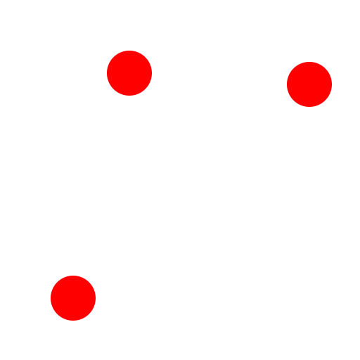

3 Punkte
Werkzeugleiste / Symbol:


Menü: Zeichnen - Bogen - 3 Punkte
Tastenkürzel: A, 3
Kommandos: arc3 | a3
Beschreibung:
Wenn der Startpunkt, der Endpunkt und ein Punkt auf dem Kreisbogen bekannt
sind, können Sie dieses Werkzeug benutzen, um einen Kreisbogen zu
konstruieren.
Vorgehensweise:
- Bestimmen Sie den Startpunkt mit der Maus oder geben Sie eine Koordinate
in die Kommandozeile ein.
- Bestimmen Sie einen bekannten Punkt auf dem der Kreisbogen zu liegen kommen soll.
- Bestimmen Sie den Endpunkt des Kreisbogens.